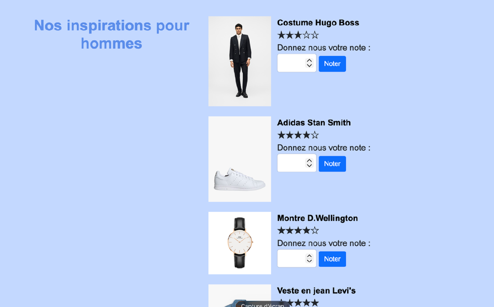
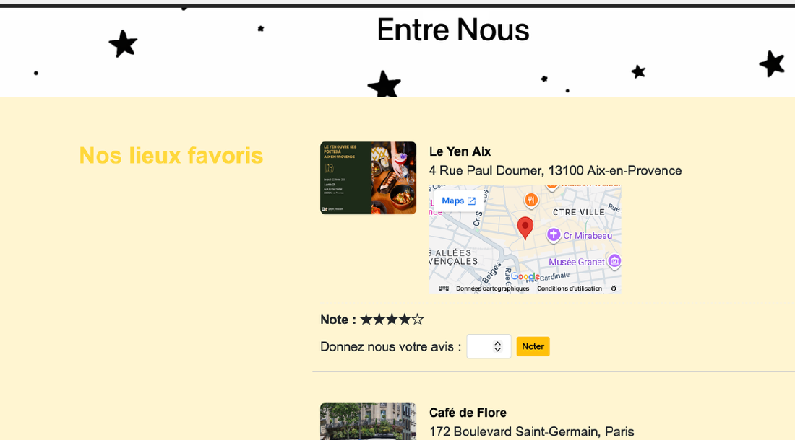

Classification de sentiments — avis de films
Axia Solutions · montée en compétence NLP
Avant de construire le chatbot, un vrai parcours de montée en compétence sur 160 000 avis de cinéma (dataset Allociné) : comprendre un texte, puis le classer comme positif ou négatif.
- Nettoyage et lemmatisation du texte (ramener chaque mot à sa forme de base), puis vectorisation en TF‑IDF
- Modèle de référence par régression logistique : 91 % de précision, avec analyse des mots les plus associés aux avis positifs et négatifs
- Gestion des classes déséquilibrées (SMOTE, pondération des classes) pour fiabiliser le modèle sur les cas rares
- Passage à un modèle plus puissant par fine‑tuning de CamemBERT, puis déploiement via une API de prédiction (FastAPI) et suivi des expériences (MLflow)
PythonTF-IDFCamemBERT
scikit-learnFastAPIMLflow
RésultatUne progression complète, du modèle simple et interprétable jusqu'au Transformer fine‑tuné, avec une API prête à l'emploi.
Chatbot IA — Assistant client
Axia Solutions · stage de 2 mois
Un assistant conversationnel capable de répondre à partir de documents internes (PDF, Word), conçu et développé de bout en bout.
- Lecture automatique des documents, nettoyage puis découpage en petits morceaux de texte
- Chaque morceau transformé en vecteur numérique (embeddings) et indexé avec FAISS pour une recherche rapide
- À chaque question, récupération des passages les plus pertinents, puis génération de la réponse par le LLM Mistral 7B, avec consigne stricte de ne répondre qu'à partir du contexte fourni pour éviter les réponses inventées
PythonMistral 7BRAG
FAISSEmbeddings
RésultatChatbot fonctionnel, testé notamment sur mon propre rapport d'économétrie, avec des réponses correctement ancrées dans le document source.
Entre Nous — forum par émotions
Projet de groupe · Licence 3
Une plateforme de bien-être qui s'adapte à l'humeur de l'utilisateur : des recommandations de films et de musiques selon qu'on se sent joyeux, triste ou stressé, un forum par thème, et des inspirations (vêtements, lieux) notées par étoiles.
- Système de comptes avec trois rôles (visiteur, membre, administrateur), chacun avec son propre menu et ses propres droits
- Forum découpé par thème (Amitié, Amour, Libre), avec un contenu différent selon qu'on est connecté ou non
- Pages de recommandations selon l'humeur, et système de notation par étoiles sur les inspirations, avec une moyenne recalculée à chaque nouveau vote
- Base de données relationnelle à 5 tables (Utilisateurs, Forum, Conseils, Inspirations, Recommandations), interrogée avec PDO et des requêtes préparées pour éviter les injections SQL
- Rôle dans l'équipe : développement du forum, du système de recommandations par humeur et de la page d'accueil
PHPSQL · MariaDBPDOHTML/CSSBootstrapXAMPP


Extrait — requête préparée PDO (protection contre les injections SQL)
$sql = "SELECT * FROM Utilisateurs WHERE Email = :Email AND Mdp = :Mdp";
$resultat = $cnx->prepare($sql);
$resultat->execute([
":Email" => $_POST["Email"],
":Mdp" => $_POST["Mdp"]
]);
RésultatSite fonctionnel livré en un semestre, avec gestion des rôles et interface d'administration dédiée.
Compétences numériques & inégalités administratives
Projet de groupe · Licence 3 · Enquête TIC 2024
Les compétences numériques réduisent-elles les inégalités administratives ? Une question d'actualité, traitée par régression logistique sur les données de l'enquête TIC.
- Sélection des variables pertinentes après plusieurs itérations de modélisation
- Modèle logit retenu face à un MCO inadapté à une variable dépendante binaire
- Rôle : exploration des données, modélisation statistique et visualisation
RRégression logistiqueStats descriptives
RésultatLes compétences numériques jouent un rôle déterminant dans l'autonomie des démarches administratives en ligne, indépendamment de l'âge, du revenu et du diplôme.